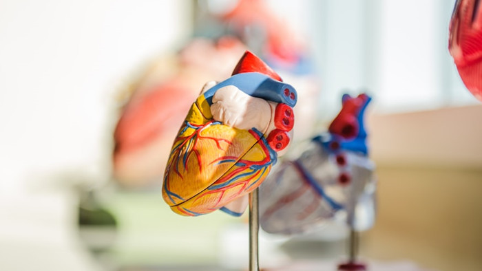

|

|
Según el tamaño del calibre, los vasos sanguíneos artificiales se dividen en tres tamaños: grande, mediano y pequeño. Por lo general, los que tienen un diámetro de más de 10 mm se denominan de gran calibre, los de entre 6 mm y 10 mm son de calibre medio y los de menos de 6 mm son de pequeño calibre.
Las propiedades mecánicas del material ideal del stent deben coincidir lo más posible con las de la arteria natural, y el material de sustitución debe ser elástico, mecánicamente duradero, degradable y tener una buena biocompatibilidad. Para ello, generalmente usan para la fabricación materiales poliméricos naturales, sintéticos o de matriz acelular derivado de animales.
|
El método consiste en inocular células de semilla en andamios de material natural o sintético, y luego construir vasos sanguíneos de ingeniería tisular que estén cerca de los vasos sanguíneos vivos en términos de morfología y función, y realizar un tratamiento de descelularización antes de la implantación para evitar el problema del rechazo inmunológico.